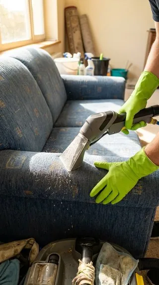

ترجعون من السفر بعد شهر أو شهرين، تفتحون باب البيت في الرياض، وأول شي يقابلكم ريحة مكان مقفول، وطبقة غبار ناعمة على الطاولات، وهوا ثقيل. والكل تعبان من الطريق. هنا يجي دور تنظيف البيت بعد السفر بالرياض: خطوات مرتبة ترجع البيت لوضعه الطبيعي، بدون ما تضيعون يومين تتنقلون من مكان لمكان.
محتويات المقال 37 قسم
- التنظيف التأهيلي للمنزل بالرياض: وش يعني وليش تحتاجونه؟
- وش يصير للبيت لما يتقفل أسابيع في الرياض؟
- أول ما تدخلون البيت
- الأمان قبل التنظيف
- لو انقطعت الكهرباء وأنتم مسافرين
- الأدوات والمواد اللي تجهزونها
- تصريف الماء في المواسير والسخان
- المكيفات: شغلوها بالتدريج
- تنظيف البيت بعد السفر بالرياض: المطبخ والثلاجة
- دورات المياه
- الغبار: من الأعلى للأسفل
- الأرضيات والسجاد والكنب
- الحشرات والآفات بعد الغياب الطويل
- النباتات والبريد والأغراض المتراكمة
- تنظيف المنزل بعد إجازة طويلة بالرياض: ترتيب اليوم الأول واليوم الثاني
- متى توفر الاستعانة بفريق متخصص وقتكم؟
- لو كان الغياب شهور مو أسابيع
- البيت في الصيف مقابل الشتاء
- الملابس والمفارش والدواليب
- لو عندكم أطفال أو كبار سن
- الريحة اللي ما تروح
- لو رجعتوا في الليل
- الأجهزة الكهربائية بعد الغياب
- الشقة مقابل الفيلا بعد الغياب
- المداخل والحوش والسطح
- تقسيم الشغل بين أهل البيت
- ملابس السفر والشنط
- المجالس وغرف الضيوف
- لو عندكم حيوانات أليفة
- بعد أسبوع من الرجوع
- الستائر والنوافذ بعد الغياب
- لو كان فيه أحد يمر على البيت
- قائمة سريعة تعلقونها
- نصائح قبل السفر الجاي
- أخطاء شائعة بعد الرجوع
- أسئلة شائعة عن تنظيف البيت بعد السفر
- الخاتمة
في هالدليل نمشي معكم من أول ما تدخلون الباب: وش تفتحون أول، وكيف تتعاملون مع الماء والمكيفات والثلاجة، ووين يتجمع الغبار، ووش تنتبهون له في الحمامات والمطبخ. ونعطيكم ترتيب لليوم الأول والثاني، عشان يكون تنظيف المنزل بعد إجازة طويلة بالرياض شغل واضح له بداية ونهاية. وهذا اللي نسميه التنظيف التأهيلي للمنزل بالرياض.
💡 النصايح هنا عامة وتناسب أغلب البيوت والشقق. ولو لاحظتوا شي غير طبيعي، مثل تسريب ماء أو ريحة غاز أو مشكلة في الكهرباء، وقفوا واطلبوا المختص قبل أي تنظيف.
التنظيف التأهيلي للمنزل بالرياض: وش يعني وليش تحتاجونه؟
التنظيف التأهيلي ببساطة هو تنظيف يرجع البيت جاهز للسكن بعد فترة غياب. يختلف عن التنظيف الأسبوعي العادي، لأنه يبدأ بالتهوية والماء والمكيفات قبل المسح، ويركز على الأماكن اللي تتأثر بالإغلاق الطويل: الثلاجة، والمصارف، والفلاتر، والمفروشات. والهدف إنكم ترجعون لحياتكم الطبيعية في البيت بأسرع وقت.
ويختلف كمان عن تنظيف ما بعد التشطيب. هناك فيه مخلفات بناء وغبار أسمنت، أما هنا فالبيت مسكون أصلًا، وكل اللي صار إنه انقفل فترة. ولهذا تنظيف البيت بعد السفر بالرياض له خطوات خاصة فيه، ترتيبها يفرق في الجهد والوقت.
والفرق بين تنظيف المنزل بعد إجازة طويلة بالرياض وبين التنظيف بعد غياب أسبوع بسيط هو الكمية. أسبوع غياب يكفيه مسح سريع وتهوية. أما شهر أو أكثر، فالغبار يتراكم طبقات، والماء يركد في المواسير، والمكيفات تمتلي، والأكل المنسي يخرب.
وش يصير للبيت لما يتقفل أسابيع في الرياض؟
الرياض مدينة غبار، والغبار يدخل البيت حتى لو كانت النوافذ مسكرة. يدخل من فتحات الأبواب، ومجاري النوافذ، وفتحات التكييف، ويقعد على كل سطح. ومع الأيام يصير طبقة تحسها بيدك لما تمرها على الطاولة. وهذا أول شي يواجهك في تنظيف البيت بعد السفر بالرياض.
- غبار متراكم على الأسطح والأرضيات والأجهزة والستائر
- هوا راكد وريحة مكان مقفول، خصوصًا في الغرف الداخلية
- رطوبة في بعض الأماكن، مثل الحمامات وتحت المغاسل، لو كان فيه تسريب بسيط
- ماء راكد في المواسير والسخان
- مصارف ناشفة تطلع منها ريحة
- أكل منسي في الثلاجة أو الخزائن ممكن يكون خرب
- فلاتر مكيفات مليانة غبار
- آثار حشرات أحيانًا في الأماكن المظلمة والهادية
مو كل البيوت يصير فيها كل هذا. البيت اللي تسكر صح قبل السفر، وانطفت فيه الثلاجة نظيفة، يكون أخف بكثير. لكن الغبار والهوا الراكد شي شبه أكيد في أي بيت انقفل أسابيع في صيف الرياض.
أول ما تدخلون البيت
لا تبدأون بالمسح ولا بفتح الشنط. أول ربع ساعة في البيت مخصصة للتهوية والفحص السريع. وهذي الدقايق هي أساس تنظيف البيت بعد السفر بالرياض، لأنها تكشف لكم أي مشكلة قبل ما تبدأون الشغل.
التهوية
- افتحوا النوافذ في الغرف كلها، خصوصًا المتقابلة عشان يمشي الهوا
- افتحوا الأبواب الداخلية وأبواب الحمامات والخزائن الكبيرة
- شغلوا شفاطات المطبخ والحمامات
- لو الجو فيه غبار برا، افتحوا النوافذ شوي وسكروها بعد نص ساعة، وكرروا بعدين
فحص سريع للماء والكهرباء
- شيكوا على الطبلون إن ما فيه قاطع طايح
- جربوا الإنارة والأفياش في كم غرفة
- شوفوا تحت المغاسل وحول السخانات إن ما فيه ماء على الأرض
- اسمعوا لو فيه صوت ماء يجري والحنفيات مسكرة
علامات غير طبيعية
امشوا في البيت ولاحظوا: بقع ماء على السقف أو الجدار، أو ريحة غريبة قوية، أو آثار حشرات أو قوارض، أو باب أو نافذة مفتوحة ما تذكرون إنكم تركتوها. صوروا أي شي تلاحظونه. وإذا فيه ريحة غاز، لا تشغلون أي كهرباء، اطلعوا من البيت وكلموا المختص. وبعد الفحص هذا، يبدأ تنظيف المنزل بعد إجازة طويلة بالرياض وأنتم عارفين وش قدامكم.
الأمان قبل التنظيف
قبل ما تفكرون في الغبار، تأكدوا إن البيت سليم. أغلب البيوت ترجعون لها وكل شي على حاله، لكن نظرة سريعة ما تاخذ دقايق:
- شيكوا على الأبواب والنوافذ إنها مقفلة زي ما تركتوها، وما فيها أثر كسر
- شوفوا لو فيه إنارة أو جهاز تركتوه شغال وأنتم مسافرين
- تأكدوا إن الأغراض المهمة في مكانها
- شموا لو فيه ريحة غاز أو احتراق قبل ما تشغلون أي شي
- لو فيه أي شي مقلق، اطلعوا من البيت وتواصلوا مع الجهة المختصة قبل ما تلمسون شي
لو انقطعت الكهرباء وأنتم مسافرين
أحيانًا ترجعون وتلاحظون إن الساعات الرقمية في الفرن أو الميكروويف رجعت للصفر، أو إن الثلاجة ريحتها مو طبيعية. هذي علامات إن الكهرباء انقطعت فترة. وهنا خذوا الثلاجة والفريزر بجدية أكثر:
- أي أكل في الفريزر شكله ذاب وانجمد مرة ثانية، الأفضل تتخلصون منه
- الأكل اللي في الثلاجة وما تعرفون كم قعد بدون تبريد، لا تخاطرون فيه
- نظفوا الثلاجة كاملة، لأن الأكل الذايب يسيل ويترك ريحة
- اضبطوا الساعات والمؤقتات في الأجهزة
- شيكوا على السخان والمكيفات إنها رجعت تشتغل طبيعي
الأدوات والمواد اللي تجهزونها
بعد السفر، أحيانًا تكتشفون إن المنظفات خلصت أو ناشفة، أو إن الفوط القديمة ريحتها مو زينة. فشيكوا على الأدوات في أول ساعة، واللي ناقص اطلبوه أو اشتروه قبل ما تبدأون:
- مكنسة كهربائية شغالة، وكيسها أو خزانها فاضي
- فوط مايكروفايبر نظيفة بألوان مختلفة للمطبخ والحمامات والغرف
- منظف متعدد الاستخدام، ومنظف حمامات، ومنظف زجاج، ومزيل دهون
- ممسحة أرضيات ودلو
- أكياس زبالة كبيرة، لأنكم بتتخلصون من أشياء كثيرة
- قفازات وكمامة للغبار
- سلم صغير آمن للمراوح والأماكن العالية
وجمعوا الأدوات كلها في سلة أو دلو تتنقلون فيه من غرفة لغرفة. وكذا ما تضيعون وقت تروحون وترجعون تدورون على شي.
تصريف الماء في المواسير والسخان
الماء اللي قعد في المواسير أسابيع ما يكون مثل الماء الجديد. ممكن يكون لونه متغير شوي في البداية، أو له ريحة خفيفة، خصوصًا في المواسير الطويلة. وكإجراء احتياطي عام في تنظيف البيت بعد السفر بالرياض، الأفضل تجددونه قبل الاستخدام.
- افتحوا الحنفيات الباردة في المطبخ والحمامات، وخلوها تجري كم دقيقة
- شغلوا الدش في كل حمام دقيقتين أو ثلاث
- اسحبوا السيفون في كل مرحاض
- شغلوا السخان، وبعد ما يسخن افتحوا الحنفية الحارة وخلوها تجري شوي
- لو عندكم فلتر ماء في المطبخ، شيكوا على موعد تغيير الشمعة
ولو لاحظتوا إن الماء لونه متغير بشكل واضح، أو ريحته غريبة وما تروح بعد التصريف، فالموضوع ممكن يكون من الخزان نفسه، خصوصًا لو ما انتظف من فترة. هنا لا تستخدمون الماء للشرب أو الطبخ، وخلوا المختص يشوف الخزان. وفي التنظيف التأهيلي للمنزل بالرياض، هالخطوة تجي قبل تنظيف المطبخ والحمامات، لأنكم بتحتاجون ماء نظيف للشغل.
المكيفات: شغلوها بالتدريج
أول شي يبيه الواحد بعد الرجوع في صيف الرياض هو المكيف. لكن المكيف اللي وقف أسابيع تكون فلاتره مليانة غبار، ولو شغلتوه على طول ممكن ينفخ الغبار في الغرفة، ويطلع ريحة. وهذي من أكثر الأشياء اللي تفرق في تنظيف المنزل بعد إجازة طويلة بالرياض.
- طفوا المكيف وافصلوا الكهرباء عنه قبل ما تفكون أي شي
- طلعوا الفلاتر واغسلوها بماء فاتر، وخلوها تنشف تمامًا قبل ما ترجعونها
- امسحوا الشبكة الخارجية وفتحات الهوا من الغبار
- شغلوا مكيف وحدة أول، على مروحة لدقايق، وبعدين على التبريد
- لاحظوا لو طلع ريحة قوية أو ماء من المكيف، ووقفوه لو صار
- المكيفات المركزية: نظفوا الفتحات في كل غرفة، والفلاتر الرئيسية حسب تعليمات الشركة المصنعة
ولو البيت حار جدًا وما تقدرون تنتظرون، شغلوا مكيف وحدة نظفتوها بسرعة، وخلوا الباقي على مهل. وتنظيف المكيف من الداخل أو الغسيل الكامل شغل مختص، خصوصًا لو كان فيه ريحة ما تروح أو تسريب ماء.
محتاج تنظيف احترافي؟
راجعين من السفر ومتعبين؟ قل لنا موعد رجوعكم، وفريقنا يجهز البيت قبل ما توصلون، وتدخلون على بيت مهوّى ونظيف وجاهز
تنظيف البيت بعد السفر بالرياض: المطبخ والثلاجة
المطبخ بعد غياب طويل يحتاج نظرة دقيقة، لأن فيه أكل. وأي أكل نسيتوه ممكن يكون خرب، أو جذب حشرات. ولهذا المطبخ يجي بدري في تنظيف البيت بعد السفر بالرياض، بعد التهوية والماء مباشرة.
الثلاجة
- افتحوها وشموا الريحة قبل أي شي
- طلعوا كل الأكل، وشيكوا على تواريخ الانتهاء
- تخلصوا من أي شي خربان أو مشكوك فيه، ولا تجربون تذوقونه
- طلعوا الأرفف والأدراج واغسلوها بماء دافي وصابون
- امسحوا الجدران الداخلية ومطاط الباب
- لو فيه ريحة باقية، خلوا الباب مفتوح فترة بعد التنظيف
- شيكوا على الفريزر لو كانت الكهرباء انقطعت وأنتم مسافرين: الأكل الذايب وانجمد مرة ثانية الأفضل تتخلصون منه
الأدراج والخزائن
- افتحوا خزائن الأكل وشيكوا على الحبوب والطحين والرز والبهارات
- أي كيس مفتوح، شوفوا إن ما فيه حشرات صغيرة أو ريحة غريبة
- تخلصوا من المنتجات المنتهية
- امسحوا الرفوف من الداخل قبل ما ترجعون الأغراض
الأسطح والحوض
- امسحوا الكاونتر والموقد والشفاط من الغبار
- نظفوا المغسلة والمصفاة، وصبوا ماء حار في المصرف
- اغسلوا الصحون والأكواب اللي كانت برا الخزائن، لأنها تمسك غبار
وفي التنظيف التأهيلي للمنزل بالرياض، المطبخ يخلص قبل ما تطبخون أي شي. حتى لو كنتوا جوعانين، اطلبوا أكل من برا اليوم الأول، وخلوا الطبخ لبعد ما يكون المطبخ جاهز.
دورات المياه
الحمامات بعد السفر غالبًا ما تكون وسخة، لكن الماء الراكد والمصارف الناشفة تخليها تطلع ريحة. وهذي خطوات بسيطة في تنظيف البيت بعد السفر بالرياض ترجعها لوضعها:
المصارف الجافة
كل مصرف فيه جزء منحني يمسك شوية ماء، وهالماء يمنع الريحة اللي في المجاري من إنها تطلع للبيت. ومع الغياب الطويل، هالماء يتبخر، فتطلع الريحة. والحل غالبًا بسيط: صبوا ماء في كل مصرف، في الدش والمغسلة وأرضية الحمام، وانتظروا شوي. ولو الريحة ما راحت بعد كم ساعة، كلموا المختص.
التعقيم
- المرحاض من الداخل والخارج، والمقعد والغطاء
- الشطاف ورأسه
- المغاسل والحنفيات والمقابض
- مفاتيح الكهرباء ومقابض الأبواب
الزجاج والأسطح
- زجاج الدش والمرايا بمنظف زجاج وفوطة ناشفة
- الرفوف وأماكن الصابون: شيلوا أي شي قديم أو ناشف
- شيكوا على الفواصل حول البانيو والدش من أي سواد أو رطوبة
وغيروا المناشف اللي كانت معلقة في الحمام، حتى لو كانت نظيفة قبل السفر، لأنها تمسك غبار وريحة المكان المقفول. ومع الحمامات، يكون الجزء الأهم من تنظيف المنزل بعد إجازة طويلة بالرياض خلص في اليوم الأول.
الغبار: من الأعلى للأسفل
الغبار هو أكبر شغل بعد السفر في الرياض. والقاعدة: ابدأوا من فوق. لأن أي غبار تنفضونه من المروحة أو أعلى الدولاب بينزل على اللي تحته. ولو مسحتوا الطاولات أول، بترجعون تمسحونها ثاني. وهذي القاعدة تمشي على التنظيف التأهيلي للمنزل بالرياض كله.
- زوايا الأسقف وشباك العنكبوت
- المراوح والثريات واللمبات
- أعلى الدواليب والرفوف العالية والبراويز
- الستائر: انفضوها أو اشفطوها، وانزلوا الخفيفة للغسيل
- النوافذ ومجاريها من الداخل
- الأثاث: الطاولات والكراسي والأرفف والتحف
- الأجهزة: التلفزيون والريموتات والراوتر والأجهزة الصغيرة
- الوزرات والأبواب ومفاتيح الكهرباء
استخدموا فوط مايكروفايبر شبه ناشفة، لأن الغبار الكثير مع الماء الكثير يتحول طين ويعمل خطوط. واشفطوا الغبار الثقيل قبل المسح، خصوصًا في مجاري النوافذ. والبسوا كمامة لو عندكم حساسية من الغبار. وفي تنظيف البيت بعد السفر بالرياض، الغرف اللي تنامون فيها تاخذ الأولوية في اليوم الأول.
الأرضيات والسجاد والكنب
بعد ما نزل كل الغبار من فوق، دور الأرضيات والمفروشات. والكنب والسجاد يمسكون غبار أكثر من ما تتوقعون، لأن القماش يشربه ويخبيه. وهذي خطوات تنظيف المنزل بعد إجازة طويلة بالرياض للأرضيات والمفروشات:
- اشفطوا الأرضيات كاملة قبل المسح، مع الزوايا وتحت الأثاث
- امسحوا الأرضيات بالمادة المناسبة لنوعها
- اشفطوا السجاد من الجهتين لو كان صغير
- اشفطوا الكنب: الجلسة والظهر والجوانب وبين الفواصل
- شيلوا مخدات الكنب وطلعوها للشمس أو مكان مهوّى
- المراتب: اشفطوها، وغيروا المفارش، وخلوها تتهوى

ولو الكنب أو السجاد عليه بقع، أو ريحته ثقيلة بعد الشفط، فهنا يحتاج تنظيف عميق بالمكاين. وهذا الشغل الأفضل يكون مع مختص، لأن الغسيل الغلط يخلي القماش يطول في النشفان، والرطوبة تطلع ريحة. وفي تنظيف البيت بعد السفر بالرياض، المفروشات تكون آخر الشغل الثقيل، بعد ما يكون البيت كله نظيف.
الحشرات والآفات بعد الغياب الطويل
البيت الهادي المقفول ممكن يجذب حشرات، خصوصًا لو كان فيه أكل منسي أو رطوبة. وما يعني هذا إن كل بيت بيكون فيه مشكلة، لكن الأفضل تنتبهون في التنظيف التأهيلي للمنزل بالرياض لهالعلامات:
- حشرات ميتة في الزوايا أو على عتبات النوافذ
- فضلات صغيرة في الخزائن أو تحت المغاسل
- أكياس أكل مقروضة أو مثقوبة
- صراصير تطلع من المصارف أو الخزائن لما تشغلون الإنارة
- آثار نمل حول المطبخ أو الأبواب
لو شفتوا علامة أو علامتين بسيطة، نظفوا المكان كويس وتخلصوا من الأكل المكشوف، وراقبوا الوضع كم يوم. أما لو الآثار كثيرة، أو شفتوا آثار قوارض، فالأفضل تطلبون مكافحة من مختص، ويقول لكم متى تنظفون بعدها ومتى ترجعون الأكل للخزائن. ولا تحاولون تستخدمون مبيدات قوية بنفسكم في البيت وأنتم ساكنين فيه.
النباتات والبريد والأغراض المتراكمة
فيه أشياء صغيرة تتجمع لما تكونون مسافرين، وتحتاج ترتيب ضمن تنظيف المنزل بعد إجازة طويلة بالرياض:
النباتات الداخلية
- شيلوا الأوراق الناشفة والميتة
- اسقوها بالتدريج على كم مرة
- امسحوا الأحواض والصحون اللي تحتها من الغبار والماء الراكد
- تخلصوا من النبتة اللي ماتت تمامًا، لأن تربتها ممكن تجذب حشرات
البريد والأغراض عند الباب
- جمعوا البريد والإعلانات والطرود من عند الباب أو الصندوق
- رتبوا الأوراق المهمة، مثل الفواتير والإشعارات، في مكان واحد
- تخلصوا من الإعلانات والكراتين أول بأول
الشنط وأغراض السفر
لا تفتحون الشنط في الصالة وتخلونها مفتوحة أيام. فضوها في غرفة وحدة، وحطوا الملابس الوسخة مباشرة في الغسيل، والشنط الفاضية امسحوها من برا وخزنوها. وكذا ما تتوزع الفوضى في البيت اللي توكم نظفتوه.
تنظيف المنزل بعد إجازة طويلة بالرياض: ترتيب اليوم الأول واليوم الثاني
ما يلزم تخلصون كل شي في يوم. الأهم إن اليوم الأول يخلي البيت صالح للنوم والأكل، واليوم الثاني يكمل الباقي. وهذا ترتيب مقترح يمشي مع تنظيف البيت بعد السفر بالرياض بشكل عملي:
| الوقت | اليوم الأول: البيت صالح للنوم | اليوم الثاني: البيت يرجع لوضعه |
|---|---|---|
| أول ساعة | تهوية وفحص سريع للماء والكهرباء وتصريف المواسير | غبار الأماكن العالية في باقي الغرف |
| بعدها | تنظيف فلاتر مكيف أو اثنين وتشغيلها بالتدريج | النوافذ والستائر والأثاث |
| منتصف اليوم | الثلاجة والتخلص من الأكل الخربان | باقي المكيفات وخزائن المطبخ من الداخل |
| العصر | الحمامات والمصارف | الكنب والسجاد والمراتب |
| المغرب | غرف النوم: غبار ومفارش نظيفة | الأرضيات كاملة |
| آخر شي | أرضيات غرف النوم والممرات | النباتات والبريد وترتيب الشنط |
وفي البيوت الكبيرة، ممكن يحتاج التنظيف التأهيلي للمنزل بالرياض يوم ثالث خفيف للمجالس والملاحق والسطح. والمهم إن الغرف اللي تستخدمونها كل يوم تخلص أول، والباقي يجي بعدها.
متى توفر الاستعانة بفريق متخصص وقتكم؟
الرجوع من السفر متعب. ساعات في الطيارة أو الطريق، وأطفال تعبانين، وشنط كثيرة، ودوام يبدأ بعد يوم أو يومين. وفي هالوضع، الخطوات اللي فوق ممكن تكون ثقيلة، خصوصًا لو وصلتوا متأخرين في الليل، أو كان الغياب طويل والبيت كبير.
هنا ممكن تتواصلون مع شركة تنظيف منازل بالرياض قبل رجوعكم بيوم أو يومين، وتتفقون إن الفريق يدخل البيت ويجهزه: تهوية، وغبار من الأعلى للأسفل، وحمامات، ومطبخ، وأرضيات، وشفط للكنب والسجاد. وكذا يكون تنظيف البيت بعد السفر بالرياض خلص قبل ما توصلون، وتدخلون على بيت جاهز تنامون فيه من أول ليلة.
ولو ما تحبون أحد يدخل البيت وأنتم مسافرين، تقدرون تحجزون الفريق في أول يوم بعد الرجوع. أنتم ترتاحون وترتبون أغراضكم، والفريق ياخذ الشغل الثقيل. وبعد ما يخلصون، امشوا معهم غرفة غرفة وشيكوا على اللي يهمكم. ومع الفريق، التنظيف التأهيلي للمنزل بالرياض يخلص في وقت أقل بكثير، وتنظيف المنزل بعد إجازة طويلة بالرياض ما ياخذ من إجازتكم يوم زيادة.
لو كان الغياب شهور مو أسابيع
الغياب لشهرين أو ثلاثة، مثل الإجازة الصيفية الطويلة، يختلف عن غياب أسبوعين. الغبار أكثر، والمصارف ناشفة أكثر، واحتمال المشاكل الصغيرة أعلى. وفي تنظيف المنزل بعد إجازة طويلة بالرياض لهالفترات، أضيفوا:
- فحص أدق للسقف والجدران من أي بقع رطوبة
- تصريف الماء لفترة أطول في كل حنفية
- تنظيف كل فلاتر المكيفات قبل التشغيل، حتى في الغرف اللي ما تستخدمونها كثير
- مراجعة الخزائن كلها من أي حشرات أو رطوبة
- غسيل الستائر والمفارش في كل الغرف
- مراجعة السيارة لو كانت واقفة في الحوش أو الموقف، لأن غبارها يدخل البيت معكم
وفي الغياب الطويل، الأفضل تخلون عندكم يومين كاملين بعد الرجوع قبل الدوام، أو تخلون التنظيف يكون جاهز قبل وصولكم. وهنا تنظيف البيت بعد السفر بالرياض يحتاج تخطيط من قبل السفر.
البيت في الصيف مقابل الشتاء
الموسم اللي سافرتوا فيه يغير شكل الشغل. وفي التنظيف التأهيلي للمنزل بالرياض، تعرفون من البداية وش تتوقعون:
بعد سفر الصيف
الحر يخلي البيت المقفول حار جدًا، والهوا ثقيل، والغبار كثير بسبب العواصف. والثلاجة لو انقطعت كهرباها، الأكل يخرب بسرعة. فخلوا التهوية والمكيفات أول شي، وافتحوا النوافذ الصباح بدري أو بالليل لما يكون الجو أبرد.
بعد سفر الشتاء
الغبار أقل غالبًا، لكن الرطوبة ممكن تكون أكثر في الأماكن اللي ما تدخلها شمس. شيكوا على الحمامات والزوايا وخلف الدواليب من أي ريحة رطوبة. والمفروشات تاخذ وقت أطول عشان تنشف لو غسلتوها، فخلوا غسيلها ليوم فيه شمس.
الملابس والمفارش والدواليب
الملابس اللي بقت في الدواليب أسابيع ممكن تمسك ريحة المكان المقفول، خصوصًا لو كانت الدواليب مسكرة طول الوقت. وهذا جزء من تنظيف البيت بعد السفر بالرياض كثير ينساه:
- افتحوا الدواليب وخلوها مفتوحة كم ساعة
- شموا الملابس، واللي فيها ريحة اغسلوها أو هووها
- غيروا مفارش السرير كلها، حتى لو كانت نظيفة قبل السفر
- البطانيات والمخدات الاحتياطية: طلعوها للهوا قبل الاستخدام
- امسحوا رفوف الدواليب من الداخل قبل ما ترجعون أغراض السفر
لو عندكم أطفال أو كبار سن
البيت اللي فيه أطفال صغار أو كبار سن يحتاج انتباه أكثر بعد الغياب، لأن الغبار والهوا الراكد ممكن يضايقهم أكثر. وفي التنظيف التأهيلي للمنزل بالرياض لهالبيوت:
- خلوهم في غرفة تنظفت وتهوت أول، لين يخلص باقي البيت
- خلوا الغبار والشفط وهم بعيد عن الغرفة
- استخدموا منظفات خفيفة في غرف الأطفال، وهووا الغرفة بعدها
- ألعاب الأطفال: امسحوها أو اغسلوها قبل ما يلعبون فيها
- شيكوا على أدوية البيت وتواريخ انتهائها، وتخلصوا من المنتهي بطريقة آمنة
وكل ما كان تنظيف المنزل بعد إجازة طويلة بالرياض مرتب بحيث تخلص غرف النوم أول، كل ما ارتاح الكبار والصغار من أول ليلة.
الريحة اللي ما تروح
أحيانًا تخلصون التنظيف، وتبقى في البيت ريحة. والأفضل تدورون على مصدرها بدل ما تغطونها بالمعطرات. وهذي أشهر المصادر في تنظيف البيت بعد السفر بالرياض:
- مصرف ناشف: صبوا فيه ماء، ولو استمرت الريحة كلموا المختص
- الثلاجة: لو كان فيها أكل خربان، تحتاج تنظيف ثاني وتهوية أطول
- المكيف: فلتر ما تنظف كويس، أو ريحة من الداخل تحتاج مختص
- سلة مهملات نسيتوها قبل السفر
- مفروشات أو سجاد مسك الريحة
- رطوبة خلف دولاب أو تحت مغسلة
والتهوية الطويلة تحل أغلب الروائح خلال يوم أو يومين. لكن لو الريحة قوية وما تخف، فهذا مؤشر إن فيه مصدر يحتاج تتعاملون معه مباشرة.
لو رجعتوا في الليل
كثير من رحلات الرجوع توصل الرياض متأخر، والكل يبي ينام. وهنا ما يلزم تبدأون الشغل كله. سووا الحد الأدنى اللي يخليكم تنامون براحة، وخلوا الباقي للصباح:
- افتحوا النوافذ ربع ساعة وشغلوا الشفاطات
- صرفوا الماء من حنفية المطبخ وحنفية حمام وحد
- نظفوا فلتر مكيف غرفة النوم وشغلوه بالتدريج
- انفضوا الغبار عن السرير وغيروا المفارش بمفارش نظيفة من الدولاب
- صبوا ماء في مصارف الحمام اللي بتستخدمونه
- سكروا الثلاجة وخلوا فتحها للصباح لو تأخر الوقت، إلا لو فيها أكل يخرب ريحته
وبهالخطوات تنامون في غرفة نظيفة ومهواة، ويبدأ تنظيف البيت بعد السفر بالرياض الحقيقي من صباح اليوم الثاني وأنتم مرتاحين.
الأجهزة الكهربائية بعد الغياب
الأجهزة اللي وقفت أسابيع تحتاج نظرة قبل ما ترجع للاستخدام اليومي. وهذا جزء من التنظيف التأهيلي للمنزل بالرياض كثير ما ينتبه له أحد:
- الغسالة: شغلوها دورة فاضية بماء حار قبل أول غسيل، وامسحوا المطاط ودرج المنظف
- غسالة الصحون: افتحوها وشموا الريحة، ونظفوا الفلتر، وشغلوها دورة فاضية
- السخانات: شغلوها وانتظروا لين تسخن، ولاحظوا أي صوت أو تسريب غريب
- الميكروويف والفرن: امسحوها من الداخل من الغبار قبل الاستخدام
- الكاتل وماكينة القهوة: اغسلوها وشغلوها بماء فقط أول مرة
- فلاتر الماء: شيكوا على موعد تغيير الشمعة
ولو جهاز ما اشتغل أو طلع منه صوت أو ريحة احتراق، افصلوه وكلموا المختص. وهالفحص ياخذ نص ساعة ويوفر عليكم مفاجآت بعدين.
الشقة مقابل الفيلا بعد الغياب
الخطوات نفسها، لكن الحجم يغير الترتيب. وفي التنظيف التأهيلي للمنزل بالرياض، هذا اللي يختلف:
الشقة
الشقة غالبًا أصغر وأسرع، والغبار فيها أقل من الفيلا لأن فتحاتها أقل. ركزوا على المطبخ والحمامات وغرف النوم في اليوم الأول، والصالة والمفروشات في اليوم الثاني. وانتبهوا للشرفة لو موجودة، لأنها تجمع غبار كثير ويدخل منها للصالة.
الفيلا
الفيلا فيها أدوار، ومجالس، وملحق، وحوش، وسطح. ابدأوا بالدور اللي بتنامون فيه، وخلوا المجالس الكبيرة اللي ما تستخدمونها يوميًا لليوم الثالث. وفي الفلل، تنظيف البيت بعد السفر بالرياض يحتاج تقسيم أوضح بين أهل البيت أو فريق، لأن المساحة كبيرة والحمامات كثيرة.
المداخل والحوش والسطح
الأماكن اللي برا البيت تتأثر بالغبار أكثر من الداخل، لأنها مكشوفة طول الوقت. وفي تنظيف المنزل بعد إجازة طويلة بالرياض، هالأماكن تجي بعد ما يخلص الداخل، عشان الغبار اللي يطلع منها ما يدخل البيت النظيف:
- اكنسوا المدخل والدرج الخارجي، وغيروا أو اغسلوا الدواسة
- الحوش: اكنسوا الأوراق والتراب، وشيكوا على المصارف إنها مفتوحة
- السطح: شيكوا إن ما فيه تجمع ماء أو أغراض طايرة من الريح
- حول الخزان العلوي: شيكوا على الغطاء إنه مقفل صح
- المكيفات الخارجية: شيلوا أي أوراق أو أكياس علقت فيها
والشغل في الحوش والسطح خلوه للصباح بدري أو بعد المغرب في الصيف. وكذا يخلص تنظيف البيت بعد السفر بالرياض من الداخل للخارج بالترتيب.
تقسيم الشغل بين أهل البيت
لما ترجع العيلة كلها مع بعض، الأفضل يكون لكل واحد دور. بدل ما الكل ينظف نفس الغرفة، أو الكل يقعد ينتظر واحد يخلص. وهذا تقسيم بسيط لـالتنظيف التأهيلي للمنزل بالرياض:
- شخص للماء والكهرباء والمكيفات، لأنها تحتاج انتباه وحذر
- شخص للمطبخ والثلاجة
- شخص للحمامات والمصارف
- الأطفال الكبار: غرفهم، وتفريغ شنطهم، وتجميع الغسيل
- الأرضيات في الآخر لشخص واحد بعد ما يخلص الكل
وبهالتقسيم، تنظيف المنزل بعد إجازة طويلة بالرياض يخلص في نص الوقت، وكل واحد يعرف وش عليه بدون ما يسأل كل شوي.
ملابس السفر والشنط
الشنط الراجعة من السفر فيها غسيل كثير، وأحيانًا رمل أو تراب من الرحلة. ولو فتحتوها على الكنب أو السرير اللي توكم نظفتوه، بترجع الأوساخ للبيت. فخلوا لها مكان واضح:
- افتحوا الشنط على الأرض في غرفة وحدة، أو في غرفة الغسيل لو موجودة
- الملابس الوسخة مباشرة للغسيل، وقسموها على كم دفعة
- الأحذية اللي رجعت معكم امسحوها قبل ما تدخل الدواليب
- امسحوا الشنط من برا وعجلاتها قبل ما تخزنونها
- خزنوا الشنط في مكان ناشف، ومفتوحة شوي عشان ما تمسك ريحة
وغسيل السفر الأفضل يكون في اليوم الأول أو الثاني، قبل ما يقعد في السلة ويمسك ريحة. وبعد أول دفعة، تكون الغسالة نظفت نفسها بالدورة الفاضية اللي سويتوها.
المجالس وغرف الضيوف
المجلس وغرف الضيوف غالبًا ما تنفتح كثير حتى قبل السفر، فبعد الغياب تكون أكثر أماكن متأثرة بالهوا الراكد. والخبر الزين إنها تقدر تنتظر. خلوها بعد ما تخلص الغرف اللي تستخدمونها كل يوم، إلا لو عندكم ضيوف جايين قريب:
- افتحوا المجلس ونوافذه وخلوه يتهوى يوم كامل
- انفضوا الكنب والمساند واشفطوها من الجهتين
- امسحوا الطاولات وأدوات الضيافة المعروضة، واغسلوا الفناجين والدلال قبل الاستخدام
- السجاد الكبير: اشفطوه، ولو فيه ريحة ثقيلة يحتاج غسيل
- حمام الضيوف: نفس خطوات الحمامات، مع تغيير المناشف والصابون
ولو كان المجلس منفصل عن البيت، مثل الملحق أو المجلس الخارجي، فغباره أكثر لأنه أقرب للحوش والشارع. خلوا له وقت مستقل.
لو عندكم حيوانات أليفة
لو الحيوان الأليف كان في مكان ثاني وأنتم مسافرين، ورجع معكم للبيت، فخلوا رجوعه بعد ما تخلص أساسيات التنظيف. الحيوانات تتحسس من الغبار وريحة المنظفات مثل الناس وأكثر:
- جهزوا مكانه وأدوات أكله وشربه وغسلوها قبل ما يدخل
- خلوه في غرفة نظيفة ومهواة لين يخلص الشغل في باقي البيت
- خزنوا المنظفات في مكان ما يوصل له
- اشفطوا الأرضيات والكنب مرة ثانية بعد أسبوع، لأن الشعر يرجع يتجمع بسرعة
بعد أسبوع من الرجوع
بعد ما يمر أسبوع وتستقرون، سووا جولة خفيفة في البيت. بعض الأشياء ما تبان إلا بعد أيام من الاستخدام الطبيعي:
- شيكوا على الثلاجة: هل الحرارة مضبوطة والريحة طبيعية؟
- المكيفات: هل التبريد زين وما فيه ريحة أو ماء؟
- المصارف: هل رجعت أي ريحة بعد الاستخدام اليومي؟
- الخزائن: هل فيه أي علامة حشرات ظهرت بعد ما رجع الأكل؟
- الغبار: هل يرجع بسرعة غير طبيعية؟ ممكن يكون من فتحة نافذة أو باب ما تسكر كويس
وأي شي تلاحظونه في هالجولة تصلحونه وهو صغير، قبل ما يكبر أو يتكرر في السفر الجاي.
وسجلوا في جوالاتكم وش الأشياء اللي تعبتكم هالمرة بعد الرجوع. يمكن الثلاجة كانت أكبر مشكلة لأنكم نسيتوا فيها أكل، ويمكن المصارف، ويمكن الغبار في غرفة معينة نافذتها ما تسكر زين. هالملاحظات هي اللي تخلي تجهيز البيت قبل السفر الجاي أدق، لأنكم تعرفون نقاط الضعف في بيتكم بالذات. ومع الوقت، كل رجعة تصير أسهل من اللي قبلها، والوقت اللي تقضونه في التنظيف بعد الوصول يقل، وتقدرون ترتاحون من أول يوم بدل ما تقضونه بين الفوط والمكنسة.
الستائر والنوافذ بعد الغياب
الستائر أكثر قطعة في البيت تمسك الغبار وأنتم مسافرين، لأنها قريبة من النوافذ ومجاريها، وقماشها يشرب الغبار والريحة. ولو شغلتوا المكيف والستائر مليانة غبار، بيتطاير في الغرفة كل ما تحركت. فخذوها بالترتيب:
- افتحوا الستائر بهدوء عشان ما يتطاير الغبار، وبعدين اشفطوها من فوق لتحت
- الستائر الخفيفة: انزلوها واغسلوها حسب ملصق التعليمات
- الستائر الثقيلة: اشفطوها وهي معلقة، ولو ريحتها ثقيلة خلوها لمختص
- امسحوا القضبان والحلقات وهي فاضية
- اشفطوا مجاري النوافذ قبل ما تمسحونها بالماء
- امسحوا الزجاج من الداخل بعد ما يخلص الغبار في الغرفة
والزجاج من برا خلوه لآخر شي، أو ليوم ما فيه غبار، لأن أي ريح بسيطة في الرياض بترجعه مثل ما كان.
لو كان فيه أحد يمر على البيت
لو تركتوا مفتاح مع قريب أو جار يمر على البيت وأنتم مسافرين، اسألوه قبل ما ترجعون: هل لاحظ أي شي؟ هل انقطعت الكهرباء؟ هل فيه تسريب؟ هالمعلومات توفر عليكم وقت في الفحص، وتعرفون من وين تبدأون. واطلبوا منه لو أمكن يفتح النوافذ يوم قبل رجوعكم، ويشغل الحنفيات كم دقيقة، ويصب ماء في المصارف. وكذا تدخلون على بيت أخف ريحة، ونص الخطوات الأولى خالصة.
قائمة سريعة تعلقونها
لو تبون شي مختصر ترجعون له كل مرة، هذا الترتيب كله في سطور. اطبعوه أو صوروه، وحطوه في جوالاتكم قبل السفر الجاي:
- تهوية وفحص سريع للماء والكهرباء والتسريبات
- تصريف الماء من الحنفيات والدش والسخان
- تنظيف فلاتر المكيفات وتشغيلها بالتدريج
- الثلاجة والأكل والخزائن
- الحمامات والمصارف
- غرف النوم والمفارش
- الغبار من الأعلى للأسفل في باقي البيت
- الكنب والسجاد والمراتب
- الأرضيات آخر شي
- الخارج: المدخل والحوش والسطح
نصائح قبل السفر الجاي
أسهل تنظيف البيت بعد السفر بالرياض هو اللي تجهزون له قبل ما تسافرون. شوية خطوات قبل الإقفال توفر عليكم يوم كامل بعد الرجوع:
- فضوا الثلاجة من الأكل اللي يخرب، أو طفوها ونظفوها وخلوا بابها مفتوح شوي
- طلعوا كل الزبالة، وامسحوا السلال
- نظفوا الحمامات والمطبخ قبل السفر بيوم
- صبوا ماء في المصارف آخر شي قبل ما تطلعون
- سكروا النوافذ كويس، وحطوا شريط أو قماش عند الفتحات الكبيرة لو فيه
- غطوا الكنب والأثاث المهم بأغطية قماش خفيفة
- سكروا محبس الماء الرئيسي لو الغياب طويل وتعرفون كيف
- افصلوا الأجهزة اللي ما تحتاجونها من الكهرباء
- اتركوا مفتاح مع شخص تثقون فيه يمر على البيت كل فترة لو أمكن
ومع هالتجهيز، يصير التنظيف التأهيلي للمنزل بالرياض عند الرجوع أخف بكثير، وأحيانًا يكفيه نص يوم. وكذا تنظيف المنزل بعد إجازة طويلة بالرياض يصير روتين بسيط تعرفون خطواته.
أخطاء شائعة بعد الرجوع
أول غلطة إنكم تشغلون كل المكيفات على طول وهي مليانة غبار. والثانية إنكم تشربون أو تطبخون من الماء قبل ما تصرفون المواسير. والثالثة إنكم تحطون الأكل الجديد في الثلاجة قبل ما تنظفونها.
والرابعة إنكم تمسحون الأرضيات أول، وبعدين تنفضون الغبار من فوق فيرجع عليها. والخامسة إنكم تغطون الريحة بالمعطرات بدل ما تدورون على مصدرها. والسادسة إنكم تحاولون تخلصون تنظيف البيت بعد السفر بالرياض كله في ليلة الرجوع وأنتم تعبانين، فتستعجلون وتفوتون أشياء. وخلوا تنظيف المنزل بعد إجازة طويلة بالرياض على يومين، وارتاحوا أول ليلة في غرفة نظيفة. وفي التنظيف التأهيلي للمنزل بالرياض، خذوا وقتكم في الترتيب حتى لو تأخرتوا شوي.
أسئلة شائعة عن تنظيف البيت بعد السفر
الخاتمة
الرجوع للبيت في الرياض بعد سفر طويل ما يلزم يكون متعب. تهوية أول، وماء نظيف، ومكيفات بالتدريج، ومطبخ وحمامات، وبعدها الغبار من الأعلى للأسفل والأرضيات آخر شي. وبهالترتيب يرجع البيت لوضعه في يوم أو يومين.
وفريق مؤسسة نقاء يخدم كل أحياء الرياض، ويجهز البيت قبل رجوعكم من السفر أو أول يوم بعد وصولكم، وتراجعون الشغل معه قبل ما يطلع.
بيتك جاهز قبل رجوعك من السفر
احجز تنظيف تأهيلي لبيتك، والفريق يرجعه جاهز للسكن بعد الغياب الطويل
محتاج تنظيف احترافي؟
تواصل معنا واحجز تنظيف تأهيلي لبيتك، ونجهزه لك قبل رجوعكم أو أول يوم بعد وصولكم
- تهوية وغبار من الأعلى للأسفل
- المطبخ والثلاجة والحمامات
- شفط الكنب والسجاد والمراتب
- خدمة في كل أحياء الرياض